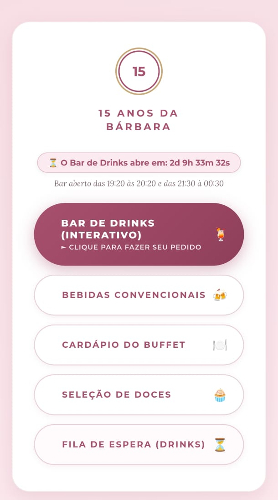
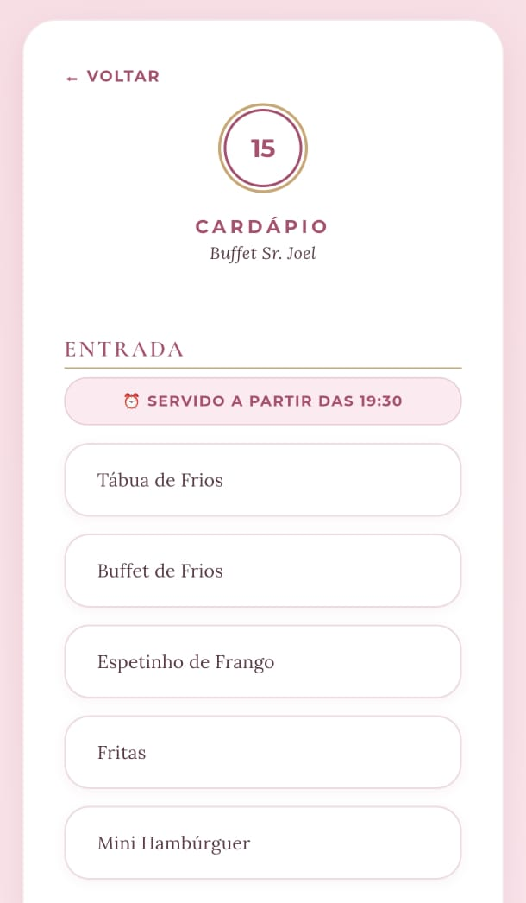
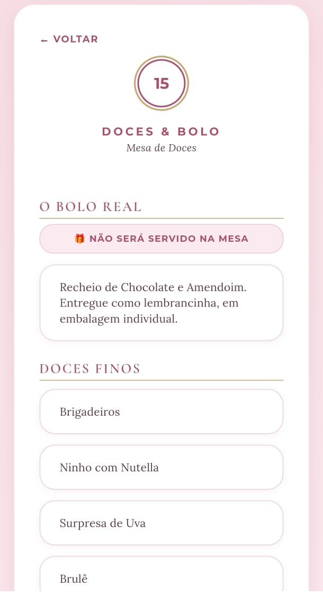
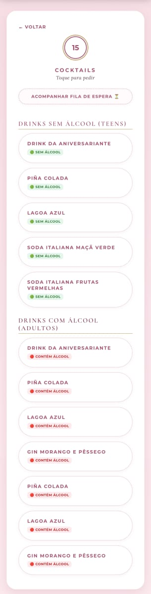
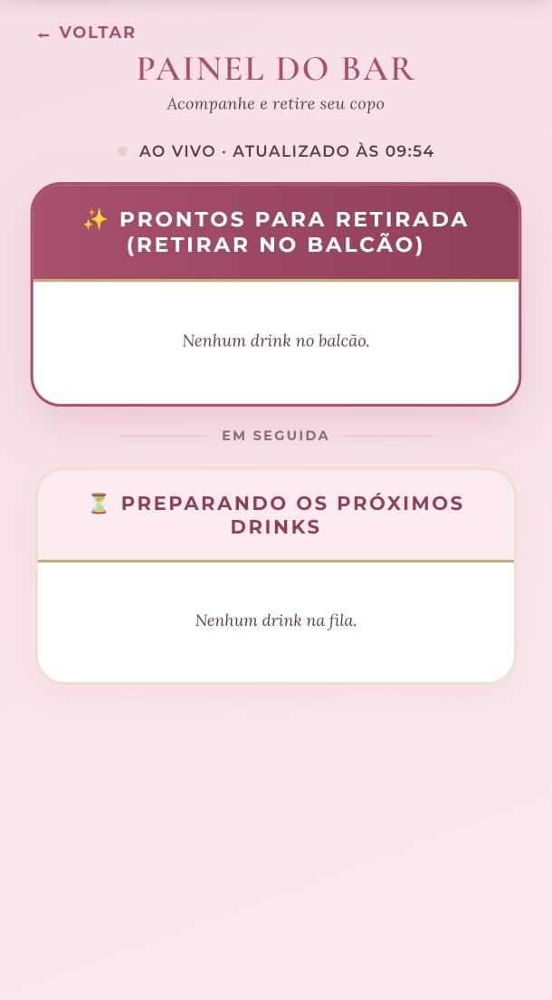
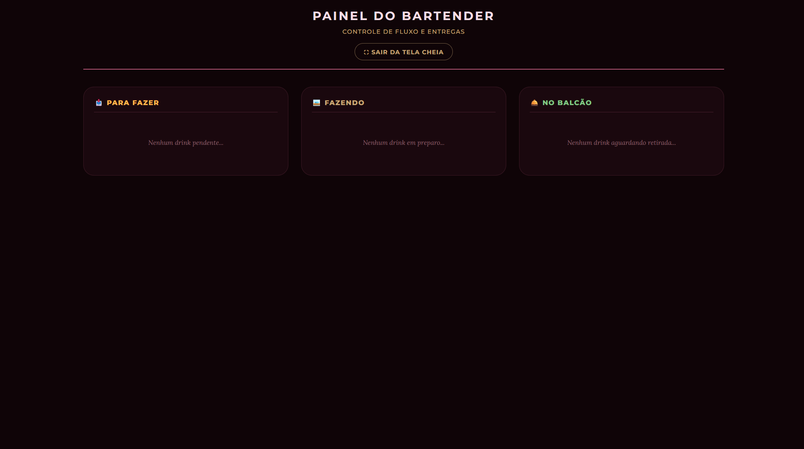

FOLHA Nº 01 — DETALHES DO PROJETO
Menu Interativo
Cardápio Digital e Bar de Drinks em Tempo Real
Sistema completo para uma festa de 15 anos: cardápio digital por QR code na mesa, bar de drinks personalizados com fila de pedidos ao vivo, painel operacional para o bartender e aviso automático no celular do convidado quando o drink fica pronto — tudo sem servidor próprio.
FOLHA Nº 02 — O DESAFIO
Do balcão lotado ao pedido pelo celular
Bares de festa com drinks personalizados esbarram num gargalo clássico: o convidado pede verbalmente, o bartender tenta lembrar quem pediu o quê, e não existe como avisar quando aquele drink específico ficou pronto sem o convidado ficar de pé, esperando no balcão.
O desafio era construir, para uma festa de 15 anos, um fluxo self-service pelo celular — sem app para instalar, sem fila física — que avisasse o próprio convidado quando seu pedido estivesse pronto, desse ao bartender uma visão clara e ordenada do que preparar a seguir, e ainda funcionasse como cardápio digital completo (buffet, doces, bebidas) acessível por QR code em cada mesa. Tudo dentro do orçamento e do prazo de um evento de um dia só.
FOLHA Nº 03 — A SOLUÇÃO
Interface e Funcionalidades
O convidado acessa tudo pelo próprio celular, sem instalar nada: um QR code na mesa leva direto ao cardápio, já identificando o número da mesa automaticamente. Nos bastidores, cada pedido de drink sincroniza em tempo real entre o convidado, o bartender e o telão de chamada.

Portal do Convidado
Hub central do evento: reúne o cardápio do buffet, da mesa de doces, das bebidas convencionais e o bar de drinks interativo, com um cronômetro que avisa se o bar está aberto, fechado ou prestes a abrir, calculado a partir do horário real do evento.

Cardápio Digital
Cardápios de consulta para buffet, doces e bebidas, com horário de disponibilidade de cada etapa exibido dinamicamente — pensados para tirar dúvidas do convidado sem precisar chamar um garçom.

Regras de Negócio Reais
Cada item carrega as particularidades combinadas com o cliente — como o bolo principal, que não é servido à mesa e é entregue como lembrancinha em embalagem individual.

Pedido de Drink Personalizado
O convidado escolhe entre drinks com e sem álcool, digita o nome e envia o pedido, que aparece instantaneamente no painel do bartender já sinalizado por faixa etária.

Fila de Espera ao Vivo
Painel público estilo telão: mostra quem está com o drink em preparo e quem já pode retirar no balcão, atualizando sozinho — o convidado também recebe vibração e aviso sonoro no celular quando seu pedido específico fica pronto.

Painel Operacional do Bartender
Interface em modo escuro para trabalhar sob luz baixa, organizada em três colunas (Para Fazer, Fazendo, No Balcão) — pensada para dois bartenders atuarem ao mesmo tempo sem risco de pegar o mesmo pedido, já que o card some da fila assim que alguém inicia o preparo. O projeto também inclui um relatório de consumo ao vivo (ranking de drinks, distribuição por horário), consultado pela organização durante e depois da festa.
FOLHA Nº 04 — ARQUITETURA
Tempo real sem servidor
O site inteiro é HTML, CSS e JavaScript puro, sem framework e sem etapa de build — cada página já
é o arquivo publicado. Toda a sincronização ao vivo (fila, painel do bartender, aviso de pronto)
roda sobre o Firebase Realtime Database, escutando mudanças em tempo real e atualizando a tela
diretamente, sem recarregar a página. Publicado no GitHub Pages, o deploy é literalmente um
git push — sem servidor para manter.
- HTML / CSS / JavaScript
- Firebase Realtime Database
- GitHub Pages
- QR Code por Mesa
- Tempo Real